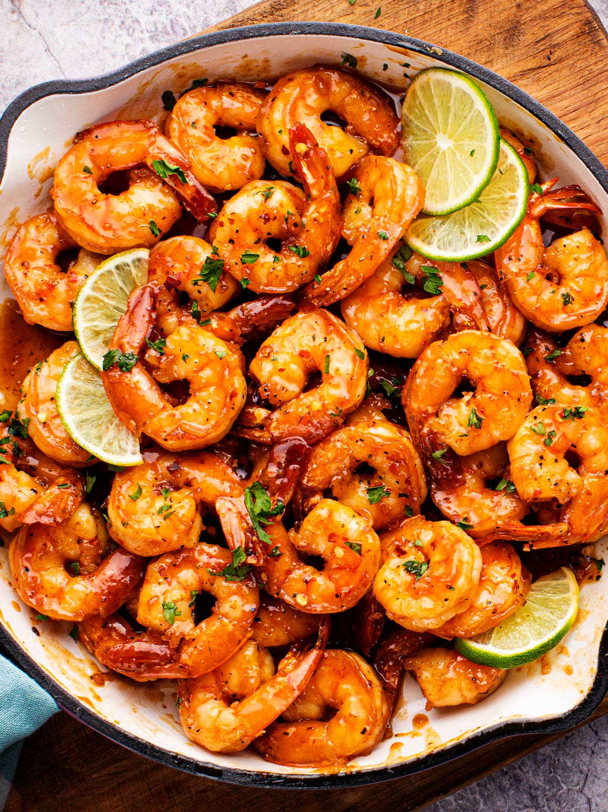

Shrimp on Fire: Heat Meets the Sea"

These spicy shrimp are a bold, flavor-packed sensation! With a perfect balance of heat and savory goodness, they’re quick to make and guaranteed to add some sizzle to your meal. Whether served as an appetizer or a main, these shrimp will have your taste buds dancing!
This spicy shrimp recipe is all about bold flavors and quick cooking. The shrimp are tossed in a fiery blend of seasonings, including cayenne pepper, paprika, and garlic, then cooked to perfection in a hot pan, giving them a crispy, flavorful crust. The heat from the spices is balanced by a hint of citrus, creating a zesty kick that will keep you coming back for more. Whether you like it mild or crave the heat, this recipe can be easily adjusted to suit your taste, making it the perfect dish for any spice lover.
What makes this recipe so great is its versatility. You can serve these spicy shrimp on a bed of rice, in tacos, or as a topping for salads and pasta. They're also a fantastic addition to a seafood platter or served as an appetizer at your next party. The quick cooking time ensures that you can enjoy a flavorful, satisfying dish without spending too much time in the kitchen. Simple, tasty, and guaranteed to spice up any meal!
Ingredients
- 1 pound large shrimp, peeled and deveined
- 2 tablespoons olive oil
- 1 teaspoon paprika
- 1 teaspoon maple syrup
- 1/2 teaspoon cayenne pepper (adjust to taste)
- 1/2 teaspoon garlic powder
- 1/2 teaspoon onion powder
- Salt and black pepper, to taste
- 1 tablespoon fresh lemon juice
- (Optional) 1 teaspoon zest of lemon
- (Optional, for extra depth) 1/4 teaspoon smoked paprika
- (Optional, for garnish) Chopped fresh cilantro or parsley
- 1 additional teaspoon maple syrup (for a touch of sweetness)
- 1/2 teaspoon crushed red pepper flakes (for extra heat)
- 1 tablespoon butter (for extra richness)
Steps
- Prep the shrimp: In a bowl, toss shrimp with olive oil, paprika, cayenne pepper, garlic powder, onion powder, smoked paprika, salt, and pepper until evenly coated.
- Cook the shrimp: Heat a large skillet over medium-high heat. Add the shrimp and cook for 2-3 minutes per side, or until pink and opaque.
- Finish: Remove from heat, stir in lemon juice and zest, and garnish with fresh cilantro or parsley. Serve immediately!